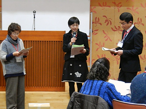
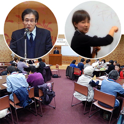

|
|
同じ地域で活動する消費者団体どうしの相互理解推進と課題の共有化、日常の取り組みの意見交換・情報交換、市町村の消費者行政の充実につながるきっかけづくりを目的に、埼玉県の委託事業として開催しています。 2月3日(水)13時30分より、春日部市民文化会館大会議室にて開催され、9団体28人が参加しました。 参加団体：春日部市くらしの会・白岡市くらしの会・越谷市消費生活研究会・加須市くらしの会・埼玉消費者被害をなくす会・コープみらい・さいたま市消団連・新日本婦人会の会埼玉県本部・埼玉県生協連  1．学習会『見て、考えて、消費者保護の法律について学びましょう』  司法書士の古久根章典さんを講師に、寸劇を交えた参加型の学習会を行いました。はじめに、身近な消費者被害の事例をもとにした寸劇（高齢者に対する送り付け商法）を披露。それを受けて各グループで商品を解約返品する解決方法を考えました。その後、古久根さんから、寸劇事例の場合にどのような対応が必要なのかを、法律に照らしてわかりやすく解説をいただきました。参加者からは「まず専門家に相談することが大切だと思いました。消費者被害にあった場合は慌てずにまず相談することを、周りの人に伝えたいと思います」などの意見が寄せられました。 2．事例報告『消費生活相談員から聞く「消費者被害」最新情報』 埼玉県消費生活コンサルタントの会の倉田るみ子さんを講師に、消費者被害の最新事例を学びました。最初に被害を防ぐために私たちができることとして「地域の皆さんの見守りで高齢者の変化を掴むこと（被害にあっても自分から相談しないことが多い）」「自分は被害にあわないと過信しないこと」と参加者に呼びかけました。その後、倉田さんが実際に見聞きした被害事例を中心にお話いただきました。 3．交流会・2015年度消費生活関連事業調査結果報告 休憩をはさんでおこなわれた交流会では、4グループに分かれて、学習会・事例報告を受けての意見交換、日常の活動に関する交流を行いました。テーブル報告では「今後の活動についての意見交換ができ、次年度の活動につなげていける良い機会となりました」「事例報告が大変参考になった。啓発につなげていきたい」などの発言がありました。その後、埼玉消団連の岩岡さんから、2015年度消費生活関連事業調査結果について報告がありました。 |